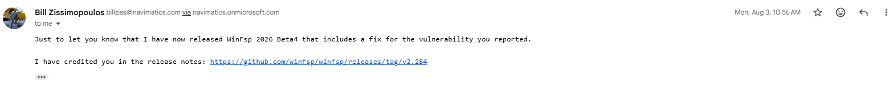

I am an offensive security researcher and student. Online I go by Squ1shification.
I find and report vulnerabilities in real software: kernel drivers, mail servers, CI/CD pipelines and cloud platforms.
I have been credited in security advisories by WinFsp and OpenBSD, and hold a published CVE.
I earn bug bounties: resolved reports with Nextcloud and Google’s OSS VRP.
I build offensive tooling: a Sliver C2 Evasion Suite and other projects, below.
WinFsp’s kernel driver trusts a 16-bit size on every notify record, but it only ever checks that the
size is big enough, never that it actually fits in the buffer you sent. So I handed it one
record that claimed to be 0xFFFF bytes while passing barely ten, and the driver walked ~64 KB
off the end of its own allocation, reading adjacent kernel pool as if it were a filename. That reliably
bugchecks the box, and with a little pool grooming those leaked bytes come straight back to user space
through change-notifications, which is enough to recover kernel pointers and defeat KASLR. Any local user can
do it, and a single bounds check closes it. Here’s the full write-up and PoC.

OpenSMTPD lets you build delivery commands out of pieces of the envelope, and the raw
modifier is meant to scrub the dangerous characters out first. It didn’t: the user and domain
parts went into the delivery agent’s environment untouched. Put the right characters in an address and
they survive all the way into the shell the MDA runs, which is code execution. I reported it to Gilles, who
fixed it with a new mda_escape() that filters those characters across every address field; it
shipped as an OpenBSD errata. I wrote it up here, with a short demo.

Sliver’s HTTP(S) listener will decode whatever PNG you send it with no cap on the decoded size, and the channel that gets you there only has 65,537 nonces to guess. So you brute-force your way in without any auth and send a few-kilobyte “PNG boomer” that claims to be 32767×32767, so decoding it tries to allocate gigabytes and the operator’s C2 server falls over. Full write-up.
Nextcloud’s check for whether a SubAdmin may manage another user blocks full admins but completely
forgets the newer DelegatedAdmin role. If you’re a SubAdmin and you share even one group
with a DelegatedAdmin, you can reset their password straight through the Provisioning API and log in as them,
and they can manage every user on the instance. Group-scoped admin to global user manager, all from
one missing line. Full write-up.

Carbon-lang runs a fork’s pre-commit hooks and uploads the resulting git diff,
plus a copy of the GitHub event, as an artifact. A second, privileged workflow then pipes that diff
into reviewdog using a bot’s token, and never checks the artifact actually came from the
real repo. Since a fork controls both its source and its pre-commit config, it controls that diff. A
malicious PR can make the trusted bot post whatever review comments it likes, and by rewriting the event
file first, aim them at any PR in the project. Full write-up.
Other reports: duplicates. A handful of issues I reported turned out to be duplicates of things already triaged from other researchers. There are many more than what’s shown here; these are just the most prevalent.


A four-kit defense-evasion suite for the Sliver C2 framework:
- Crystal Palace loader: a position-independent loader built with the Crystal Palace linker.
- Sleep masking: encrypts the beacon in memory while it sleeps.
- In-memory PE execution: runs PE payloads reflectively, in memory, without touching disk.
- Remote process injection with PPID spoofing: injects into a remote process while spoofing its parent process ID.
Proof of concept for CVE-2026-77622: a tiny PNG that decodes to gigabytes and runs a Sliver C2 server out of memory. Published as GHSA-663m-7x7m-g4fw.
A path-traversal file-read proof of concept for Grafana CVE-2021-43798.